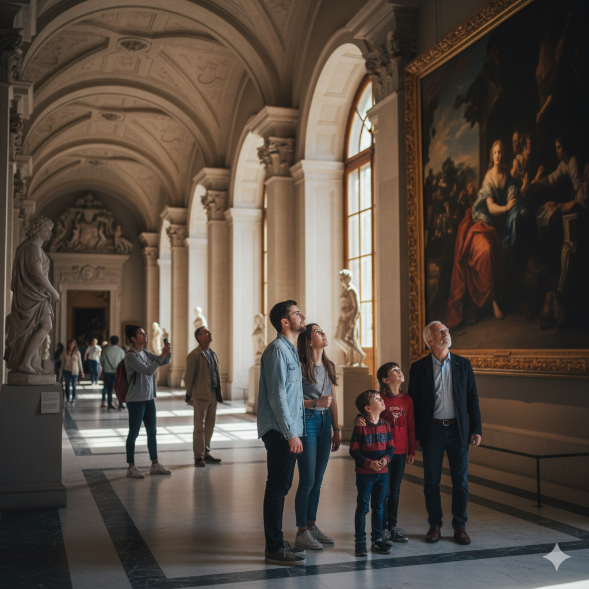
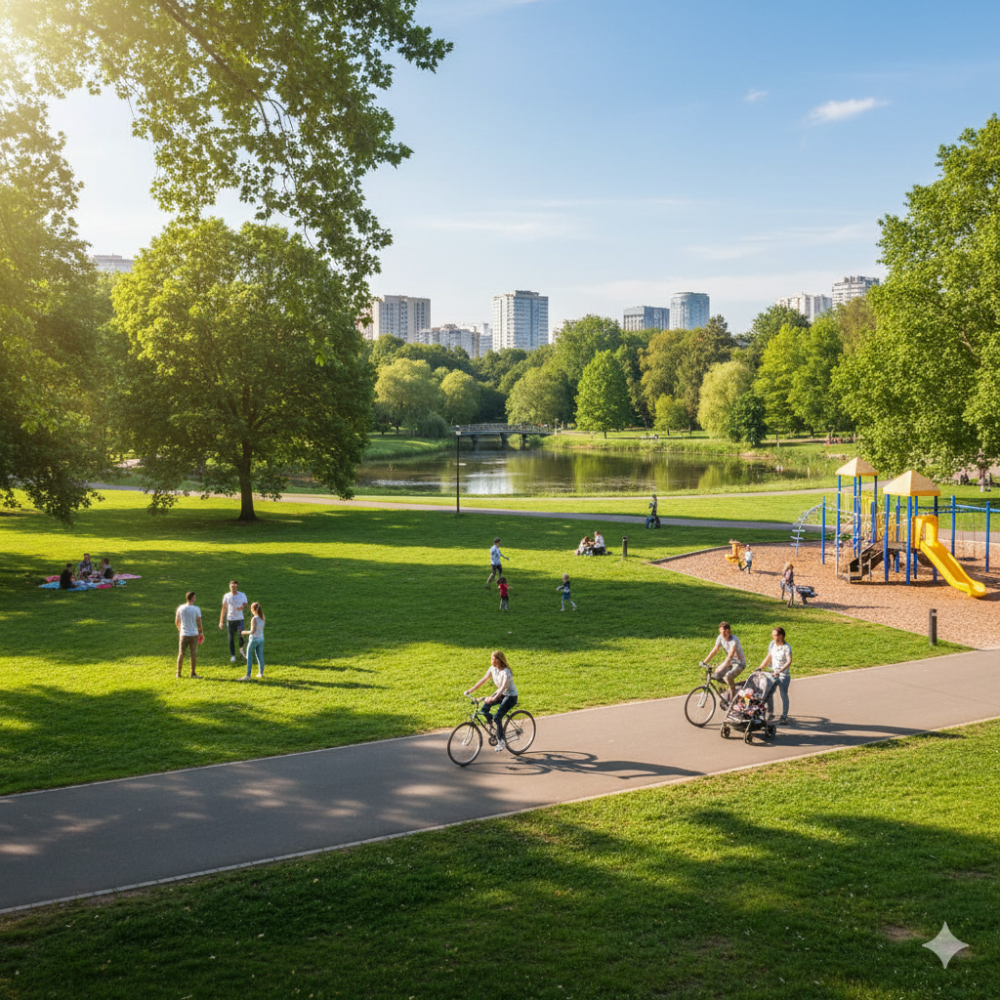

מגלים את ירושלים
עיר של היסטוריה, תרבות, אוכל וחוויות – בואו להכיר את ירושלים דרך העיניים שלנו.
מה מחכה לכם כאן
טעימה קטנה מהתוכן שבפנים – קפיצה מהירה לעולמות שמרכיבים את ירושלים.


אירועים בירושלים
הופעות חיות, פסטיבלים, תערוכות, אירועי תרבות וסדנאות – בואו לגלות מה קורה בעיר שלא נרדמת.

